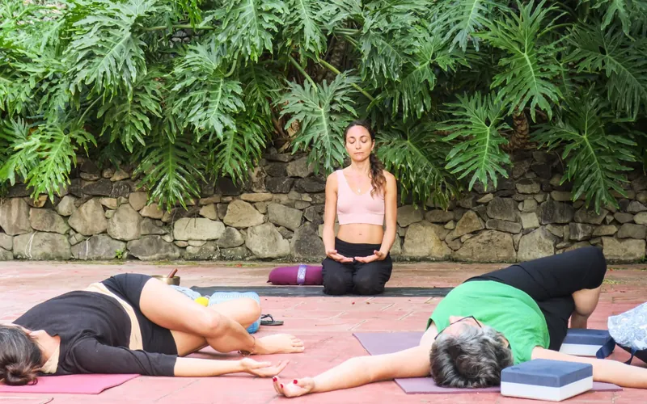
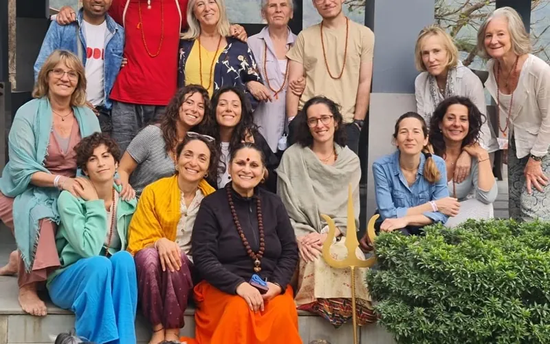

Vivere l'esperienza in gruppo
Workshop, conferenze e ritiri per uscire dalla routine, guardarsi dentro e condividere il cammino con altre persone.
I ritiri di Miquel e Melania Di Vara
Miquel organizza i suoi ritiri e corsi insieme a Melania Di Vara con il nome El Último Viaje del Ego.
Facciamo ritiri ed eventi in Catalogna, alle Canarie e in India. Lì troverai tutte le informazioni sui prossimi ritiri, sul corso online e sui percorsi terapeutici di gruppo.
Cosa ci aspetta

India · Rishikesh
Ritiro di 13 notti sulle rive del Gange con Melania Di Vara e Miquel Canut. 2.812 € a persona.
Vedi il ritiroTornare a casa. Il viaggio dell'ego
Corso online su Zoom con Miquel Canut e Melania Di Vara. Nuova edizione da gennaio 2027.
Vedi il corsoCatalogna e Canarie
Oltre all'India, facciamo ritiri ed eventi in Catalogna e alle Canarie. Scrivici e ti diremo le prossime date.
Scopri doveMiquel dal vivo
Miquel è relatore in eventi internazionali e tiene workshop per gruppi, in cui unisce riflessione, dinamiche ed esperienza condivisa.
[In sospeso: prossime date di workshop e conferenze, o un link al calendario]
Vuoi invitare Miquel al tuo evento o organizzare un workshop? Scrivigli.